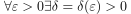
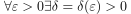
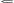
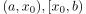
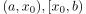
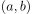
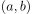

Treppenapproximierbarkeit und Sprungstetigkeit von Funktionen
1. Satz
Eine Funktion ist g.d.w. sprungstetig wenn sie treppenapproximierbar ist
2. Beweis
2.1. treppenapproximierbare  sprungstetige
sprungstetige
o.B.d.A. für linksseitigen Grenzwert:
Sei  beliebig, so folgt nach Annahme:
, so dass gilt
beliebig, so folgt nach Annahme:
, so dass gilt
 1
1
Daraus folgt nach Definition der einseitige Grenzwert
2.2. treppenapproximierbare  sprungstetige
Sei  gegeben, so existiert für jeweils Intervalle der Form  oder
gegeben, so existiert für jeweils Intervalle der Form  oder  so dass die Einschränkung darauf stetig ist, d.h. mit Abweichung von höchstens
Man vereinige die beiden Intervalle und erhalte das offene Intervall , d.h. wir erhalten durch maximal einer Halbierung eine offene Überdeckung.
Nach dem Satz von Heine-Borel für die reellen Zahlen existiert eine endliche offene Überdeckung und die Pseudo-überdeckung durch die halboffene Intervalle bzw. offene Intervall
so dass die Einschränkung darauf stetig ist, d.h. mit Abweichung von höchstens
Man vereinige die beiden Intervalle und erhalte das offene Intervall , d.h. wir erhalten durch maximal einer Halbierung eine offene Überdeckung.
Nach dem Satz von Heine-Borel für die reellen Zahlen existiert eine endliche offene Überdeckung und die Pseudo-überdeckung durch die halboffene Intervalle bzw. offene Intervall